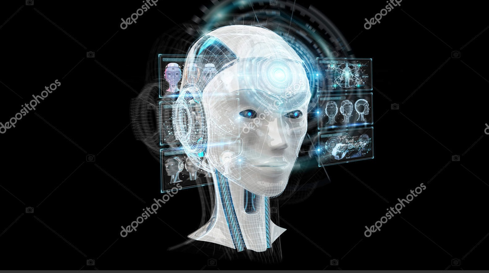

Artificial intelligence (AI) is evolving—literally. Researchers have created software that borrows concepts from Darwinian evolution, including “survival of the fittest,” to build AI programs that improve generation after generation without human input. The program replicated decades of AI research in a matter of days, and its designers think that one day, it could discover new approaches to AI.
“While most people were taking baby steps, they took a giant leap into the unknown,” says Risto Miikkulainen, a computer scientist at the University of Texas, Austin, who was not involved with the work. “This is one of those papers that could launch a lot of future research.”
Building an AI algorithm takes time. Take neural networks, a common type of machine learning used for translating languages and driving cars. These networks loosely mimic the structure of the brain and learn from training data by altering the strength of connections between artificial neurons. Smaller subcircuits of neurons carry out specific tasks—for instance spotting road signs—and researchers can spend months working out how to connect them so they work together seamlessly.

In recent years, scientists have sped up the process by automating some steps. But these programs still rely on stitching together ready-made circuits designed by humans. That means the output is still limited by engineers’ imaginations and their existing biases.
So Quoc Le, a computer scientist at Google, and colleagues developed a program called AutoML-Zero that could develop AI programs with effectively zero human input, using only basic mathematical concepts a high school student would know. “Our ultimate goal is to actually develop novel machine learning concepts that even researchers could not find,” he says.
The program discovers algorithms using a loose approximation of evolution. It starts by creating a population of 100 candidate algorithms by randomly combining mathematical operations. It then tests them on a simple task, such as an image recognition problem where it has to decide whether a picture shows a cat or a truck.